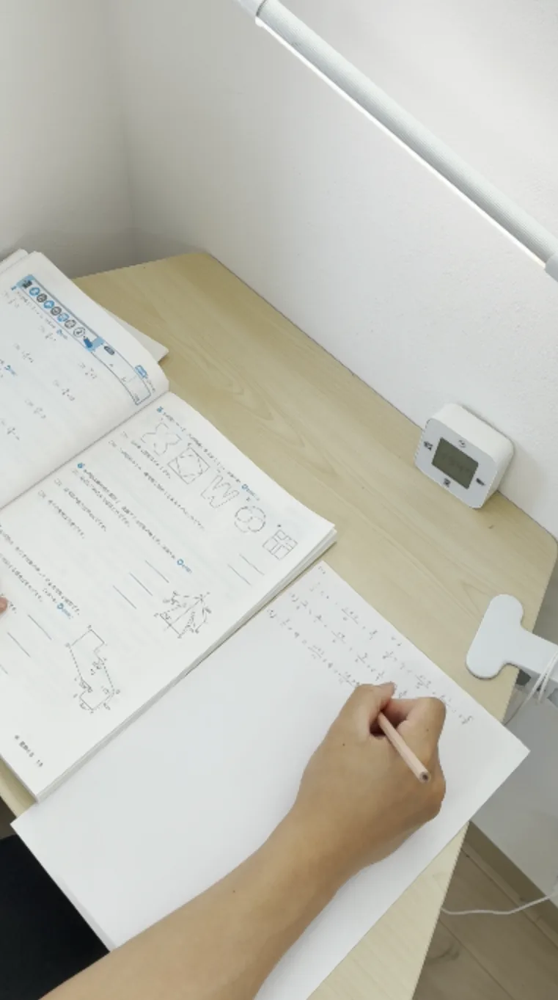

現在地を確認
受験する級、試験日、これまでの学習状況を確認します。
荻窪の英検対策
英検は「何を、いつまでに、どの順番で進めるか」が大切です。おぎココでは、受験する級・試験日・現在の理解度を確認し、一人ひとりに合った学習内容を組み立てます。

こんなお悩みに
おぎココの英検対策
受験する級、試験日、これまでの学習状況を確認します。
単語・文法・長文・リスニング・英作文などから、今必要な内容を整理します。
理解度や進み具合を見ながら、その日の授業内容を組み替えて進めます。
受講方法
普段は別の塾に通っている方や、英検前だけ重点的に学びたい方もご相談いただけます。
小学生 月4回 10,560円 ／ 中学生 月4回 11,600円 ／ 高校生 月4回 12,320円
月8回・月12回、回数券・スポット受講についてもご相談ください。
1回50分です。
よくあるご質問
はい。英検対策のみの受講にも対応しています。
現在の理解度や受験する級によって異なります。試験日が決まっている場合は、残り期間から逆算して学習内容をご提案します。
はい。現在使用している教材がある場合は、内容を確認しながら進めることもできます。